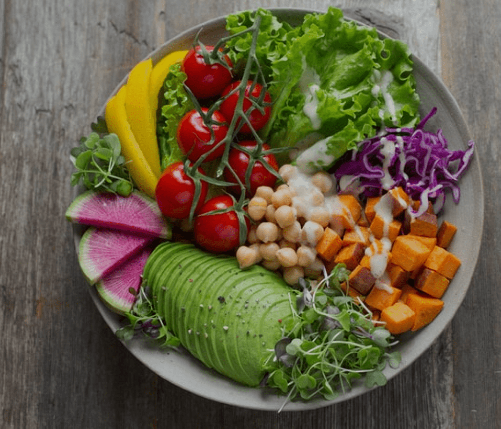
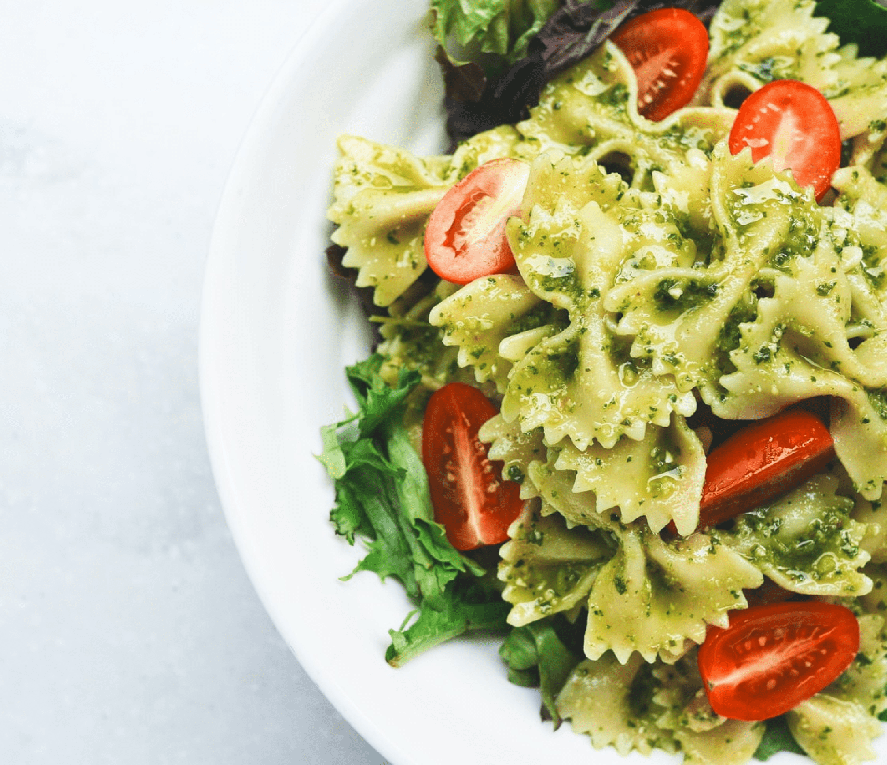
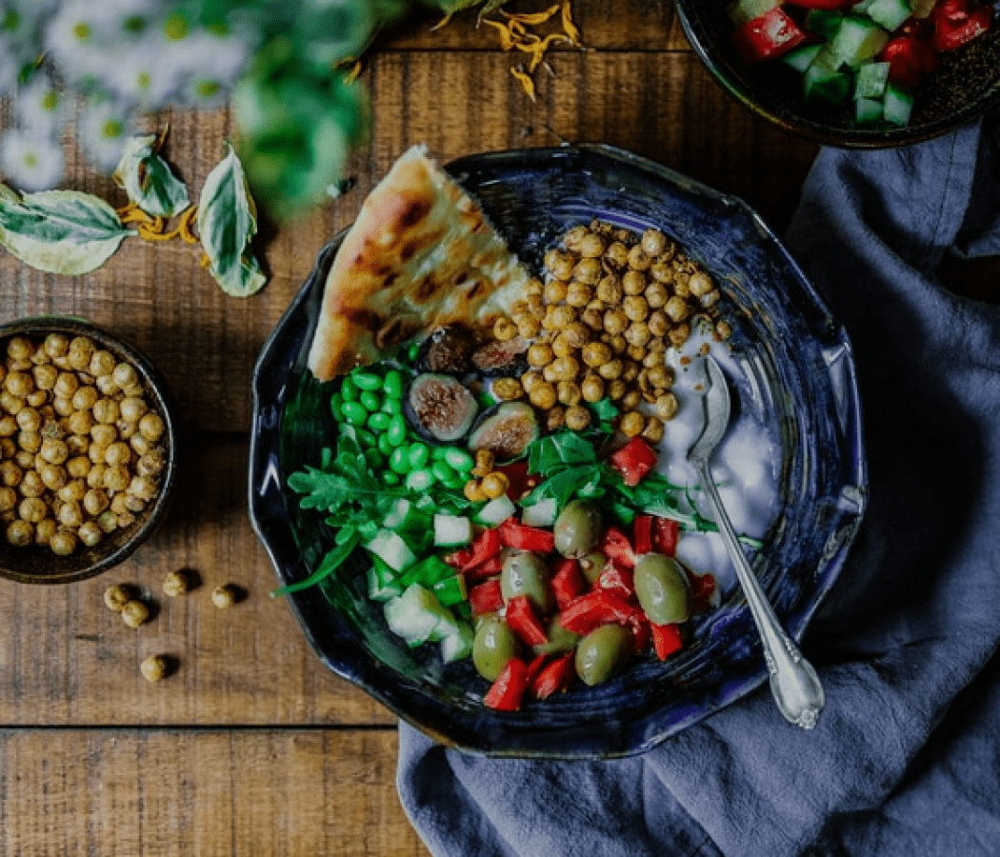

Vegetable Salad
Most leafy vegetables that can be eaten raw are used: all varieties of lettuce, garden cress and
watercress, endives, cabbage, spinach, romaine, arugula, and fresh herbs. Other
vegetables, raw or cooked—tomatoes, onions, cucumbers, peppers and so on—may garnish the green
salad.

Vegetable Pasta
Fresh vegetables used in the place of noodles are clearly the healthiest option. One popular way to make
veggies like sweet potato, cucumber or zucchini look like noodles is to spiralize them, or use a machine
to slice them into long, curly strands.

Vegetable Bowl
Vinegar or juice: You can also use juice, a fresh-squeezed lemon, or vinegar to gives it a new taste. Add
it during the cooking process or drizzle on top before serving. Fresh or dried herbs and spices also
bring another dimension to vegetable dishes.